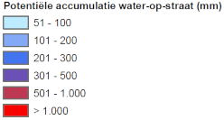
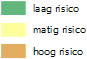

Nederland staat bekend om haar druilerige weer, vaak regen en weinig zon. Nu de klimaatverandering steeds meer haar voeten in de aarde zet en de effecten merkbaar worden, zal dit druilerige weer langzamerhand steeds meer veranderen. Eén van deze veranderingen is het feit dat de buien die boven ons land vallen, extremer zullen worden. Dit houdt in: relatief kortere buien (piek bui) met veel neerslag. Het gemeentelijk rioleringssysteem is op voorhand niet berekend op extremen die in deze tijden vallen. Het kan dus zomaar voorkomen dat tijdens zo’n piek bui water op straat blijft staan. Deze overlast probeert men zoveel mogelijk te voorkomen.
Op de kaart
Wateroverlast 100mm
Adviesbureau Tauw heeft door middel van een analyse van de hoge en lage gebieden in Nieuwegein overlast locaties in kaart gebracht.
Maximale overstromingsdiepte
Risico op wateroverlast
De kaart geeft een indeling op drie typologieën. Deze worden berekend aan de hand van het water op straat (wateroverlast kaart) en de locatie van gebouwen in de stad. Hoe dichterbij de plassen richting de panden gaan, hoe hoger het risico wordt aangegeven.
Waterlopen
Deze laag geeft de waterlopen in de gemeente aan.
Legenda
Wateroverlast 100mm
- 
Maximale overstromingsdiepte

Risico op wateroverlast
- 